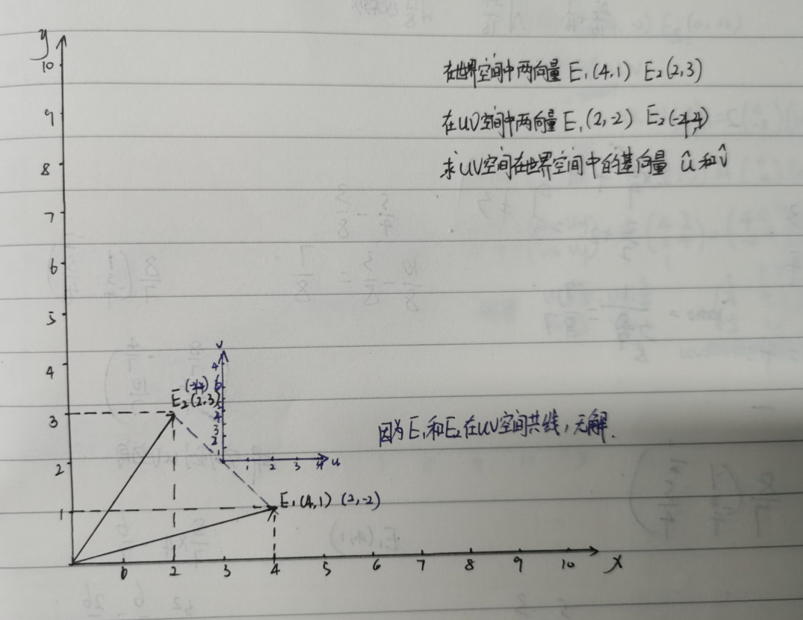
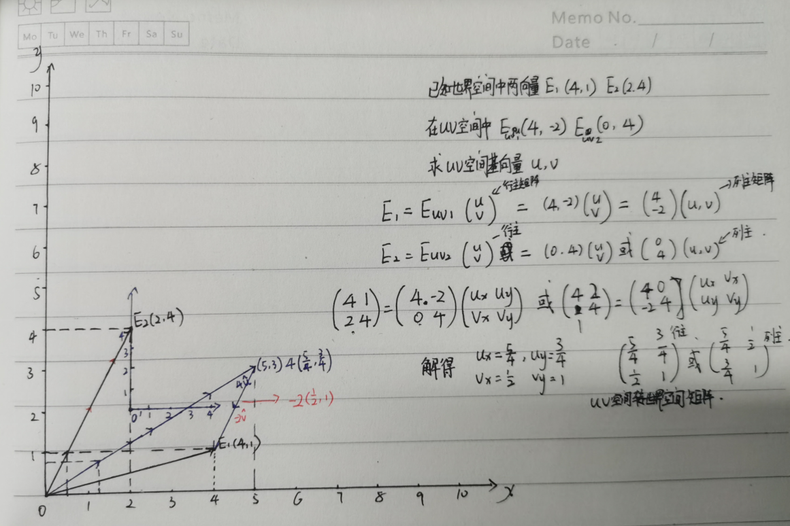
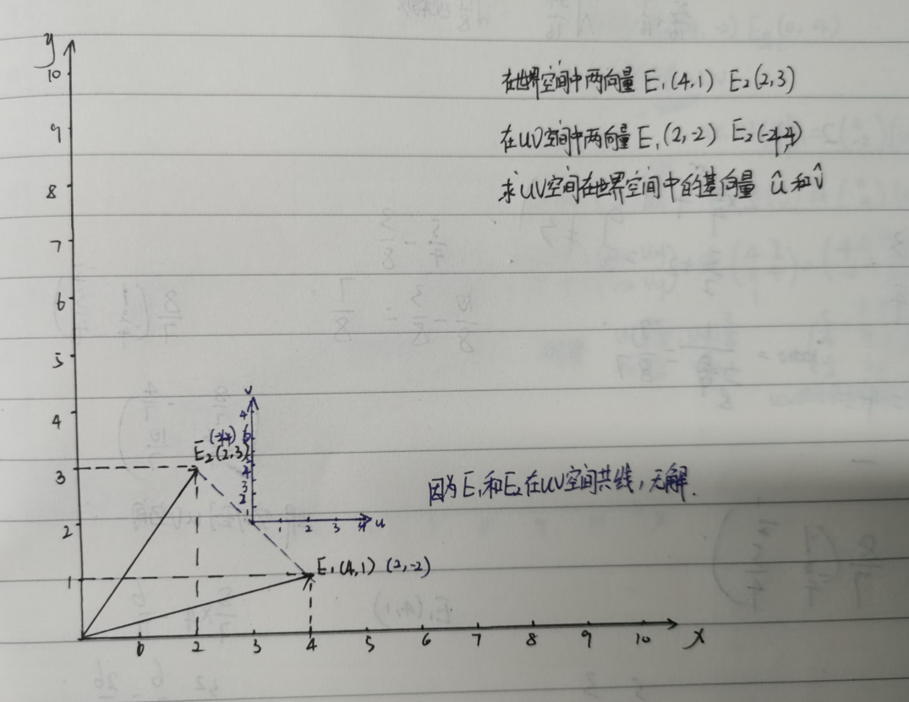
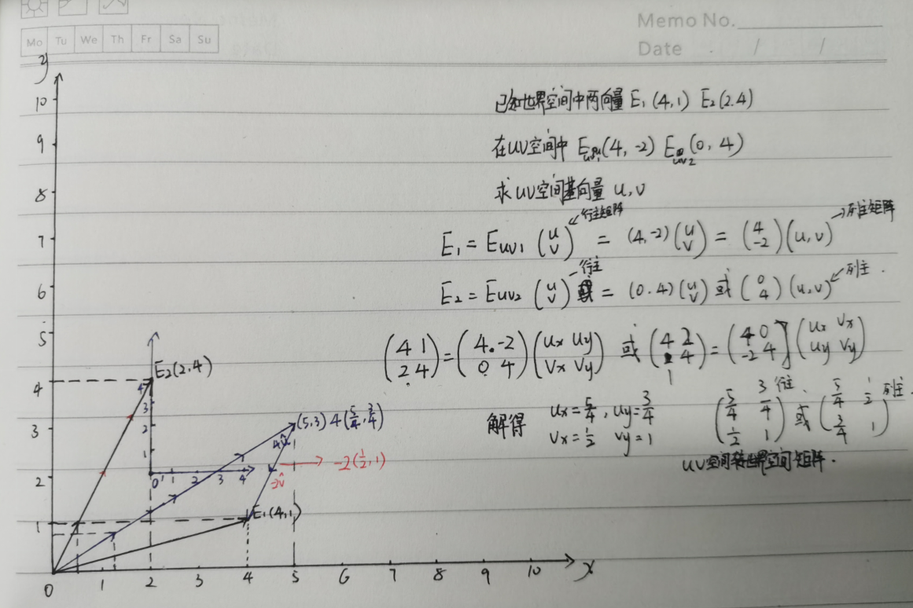

4.5.1 顶点上的其他信息
3.切线与副切线
在已知某个空间的两个点和基向量,和在另外一个空间两个点的坐标,如何求另外一个空间的基向量变换矩阵
day1:暴露出来很多线性计算不熟的问题


求解过程中暴露出来两个问题:
1.对于什么情况下空间有解不太熟悉了
2.行主矩阵和列主矩阵区分模糊,然后变换的方向也考虑错了
推测可能问题1:
实际上这里是一个复合矩阵,是旋转缩放加位移,所以要升一个维度到齐次空间才能求解了.
day1:暴露出来很多线性计算不熟的问题


求解过程中暴露出来两个问题:
1.对于什么情况下空间有解不太熟悉了
2.行主矩阵和列主矩阵区分模糊,然后变换的方向也考虑错了
推测可能问题1:
实际上这里是一个复合矩阵,是旋转缩放加位移,所以要升一个维度到齐次空间才能求解了.